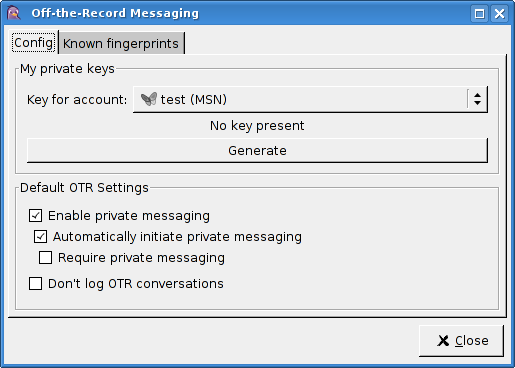

Setting up OTR with Pidgin on Gentoo is a fairly simply process requiring only four steps.
Note: Following this process will cause Pidgin, if you have not already done so, to become installed.
Simply emerge the plugin; Portage will take care of all dependencies automatically:
emerge pidgin-otr
Start Pidgin. Select Tools --> Plugins. Locate the plugin titled "Off-the-Record Messaging". Click on the check box to enable it.
[Note: This step is optional. OTR will function fine without any configuration, but setting options may make OTR more useful to you.]
Ensure the plugin window is open and "Off-the-Record Messaging" is selected, then click "Configure Plugin".

If you wish to generate a key now, select the desired account from the "Key for account" list, and click "Generate". If Pidgin seems to freeze up for a while during this process, it doesn't have enough random data (/dev/random is empty). To fix this, try moving your mouse around wildly, or mashing the keyboard in a text document.
Here you can set how OTR will behave by default.
The settings here are the same as described in "Default OTR Settings" (above). This simply allows you to have different settings for different people.
Now, all you have to do is start talking to someone who has OTR. The first time you talk to them, you will receive a message about authenticating your buddy. For more information about this, please consult the OTR documentation.
That's all there is to it!
Note: Format and some parts of this guide based on those by Adam Zimmerman.